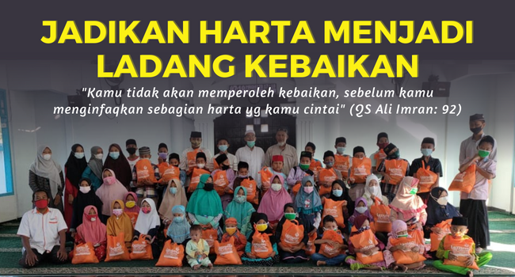

Assalamu'alaikum..
Infaq menjadi salah satu ibadah sosial yang utama, karena mengandung pengertian bahwa selain berdampak nyata terhadap membantu kesulitan saudara muslim orang lain yang mengalami kesulitan ekonomi.
Baca Selengkapnya
“Perumpamaan orang yang menginfakkan hartanya di jalan Allah seperti sebutir biji yang menumbuhkan tujuh tangkai, pada setiap tangkai ada seratus biji. Allah melipatgandakan bagi siapa yang Dia kehendaki, dan Allah Maha Luas, Maha Mengetahui.” (QS. Al-Baqarah: 261).
Sobat Lazismu, mari sisihkan Sebagian rezeki kita untuk yang membutuhkan, karena sejatinya dalam rezeki kita ada juga bagian untuk saudara-saudara kita yang membutuhkan.
Dan pada harta-harta mereka ada hak untuk orang miskin yang meminta dan orang miskin yang tidak mendapatkan bagian. (QS. Adz-Dzariyat: 19).
Insya Allah dengan berinfaq termasuk bentuk kita mensyukuri segala nikmat dan rezeki yang Allah berikan, berapapun yang Anda berikan sangat berarti besar bagi yang menerima.
Infaq dari Sobat Lazismu yang terkumpul akan disalurkan untuk 5 program utama yaitu: Pendidikan, Kesehatan, Ekonomi, Sosial Dakwah dan Kemanusiaan.


Dari Abu Hurairah dia berkata, Rasulullah bersabda,
Barangsiapa yang membantu seorang muslim (dalam) suatu kesusahan di dunia maka Allah akan menolongnya dalam kesusahan pada hari kiamat, dan barangsiapa yang meringankan (beban) seorang muslim yang sedang kesulitan maka Allah akan meringankan (bebannya) di dunia dan akhirat. (HR Muslim no. 2699).